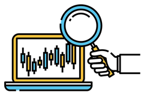
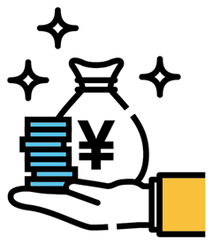
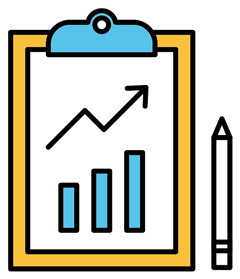
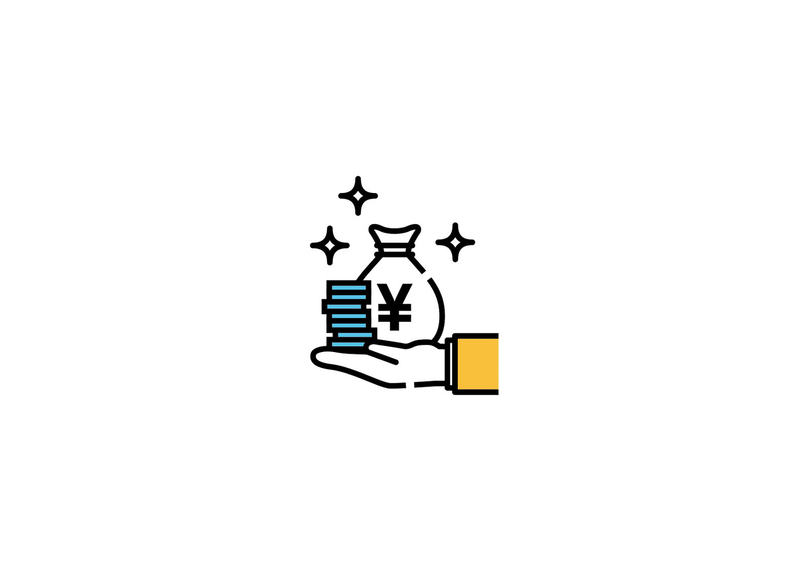

成果に責任を持つ、
少数精鋭のマーケティングチーム
アクセルは、広告運用・SEO・Web制作を横断して設計できる体制を持つデジタルマーケティングエージェンシーです。施策単位の請負ではなく、事業のKPIから逆算した戦略を立て、実装・運用・改善までを同じチームで担当します。
平均在籍7年のコンサルタントが、業界構造と顧客の購買行動を読み解いたうえで投資配分を決定。月次のレポートでは数値の報告だけでなく、次に何をするかを必ず提示します。

選ばれる4つの理由
戦略から実装まで一社完結
広告・SEO・制作の担当が同じチームにいるため、施策間の分断が起きません。判断が早く、改善サイクルも短くなります。

KPIから逆算した設計
CPAやROASだけでなく、LTVと粗利を含めた指標で投資判断を行います。売上に効かない施策は提案しません。
運用の中身を開示
アカウント構成、入札調整の履歴、工数の内訳まで共有します。運用をブラックボックスにしません。
担当が変わらない体制
初回の相談を担当したコンサルタントが、そのまま運用まで伴走します。引き継ぎによる品質低下を防ぎます。
サービス

SEO・コンテンツ設計
検索意図の構造化からテクニカル改善、記事制作までを一体で進め、指名検索と自然流入を積み上げます。

広告運用（検索・SNS）
Google・Yahoo!・Meta・LINEを横断し、獲得単価と獲得件数のバランスを見ながら予算を再配分します。
Web制作・LP設計
表示速度と導線を優先した設計で、広告と一体運用できるサイト・ランディングページを構築します。
SNSマーケティング
アカウント設計・投稿制作・インフルエンサー起用までを設計し、購買につながる接点を増やします。
ブランディング
ポジショニングとメッセージを定義し、広告クリエイティブから採用広報まで一貫した表現に整えます。

分析・レポーティング
計測環境の設計からダッシュボード構築まで対応し、意思決定に使える数値を常に見える状態にします。
お取り組みの流れ
ヒアリング
事業構造、粗利、営業プロセスまで伺い、マーケティングで解くべき課題を特定します。
調査・戦略設計
競合と検索需要を調査し、KPIツリーと予算配分、6か月のロードマップを提示します。
実装・制作
計測環境、広告アカウント、LPを並行して構築。初月から検証が回る状態をつくります。
運用・改善
週次で数値を確認し、クリエイティブと入札を調整。月次で次の打ち手を決めます。
拡大
再現性が確認できた施策に予算を寄せ、新チャネルと新商材へ展開していきます。
実績紹介


お客様の声
週次のミーティングで必ず次の打ち手が出てくるので、社内の意思決定が早くなりました。数字の見方も教えてもらえるため、こちらの判断力自体が上がっています。
マーケティング部長 佐久間 亮
前の代理店では運用の中身が見えませんでした。アクセルは調整の理由まで説明してくれるので、社内の説明資料をそのまま作れる状態になっています。
代表取締役 岩井 みなみ
制作と広告を別会社に頼んでいた頃の手戻りがなくなりました。LPの修正が翌週の配信に反映されるスピード感は、正直まったく違います。

院長 高松 健司